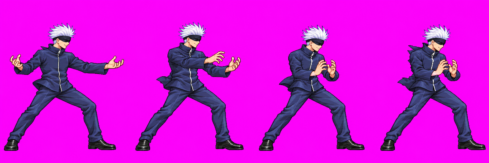
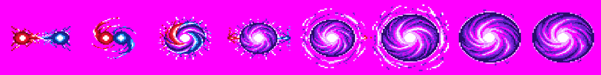
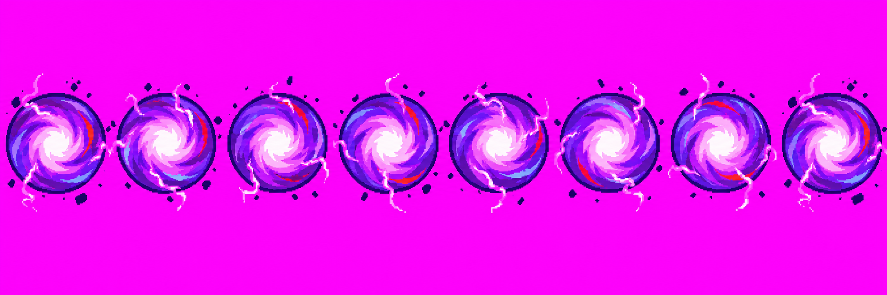
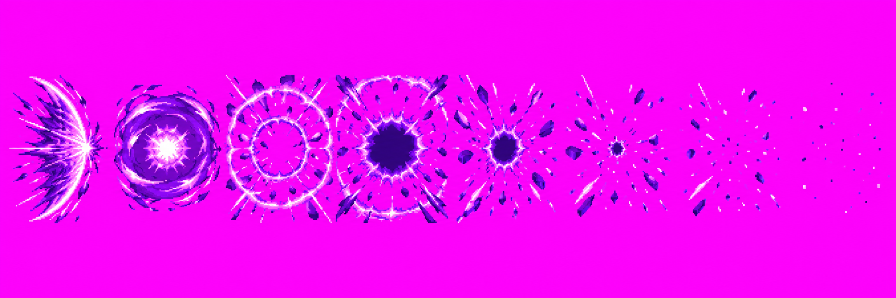
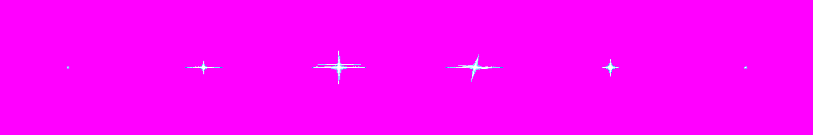

Gojo skills revamp · Batch 2
Hollow Purple candidates · 18 October 2026 · branch art/gojo-skills
Needs your drawing decision; nothing in this batch is approved. Batch 1 (lapseBlue, blueCollapse, redForm, reversalRed, redBurst v01) was approved by you via Claude. Batch 2 contains beamCharge v04 and four effects. The character strip passes the packer's automatic head gate and has an independent Astra anatomy/scale audit; see its exact findings below. Raw source-format holds remain: purpleForm and sixEyesGlint were normalized by cropping/resizing/recoloring; untouched generator originals are linked. hollowPurple, purpleBurst and beamCharge are unmodified generator outputs with near-magenta backgrounds and oversized source dimensions.
B1 · beamCharge v04 · 3/3 calls used
Red and Blue held apart, then brought together at his chest. The play strip keeps the blindfold on and contains no energy effects. Packed frame sequence is shown at the game cell size, beside the approved Gojo combat reference.
Packed atlas frames 123–126, one cell each
Packed idle f0, same atlas density

Approved Gojo combat reference · title-style pilot cell
Raw strip

2172×724 RGB · 100,930 colors · sampled background RGB(252,2,250) · unchanged source. Packer: 4/4 frames, quantized to 48 colors, auto-head fit x0.8562; head ratios [0.997, 0.997, 1.000, 0.971], feet ratios before fit 1.21. Body report: B [0.951, 0.918, 0.858, 0.874], median 0.896, no advisory flag. Open body comparison sheet. The lower f2/f3 garment area reflects folded-arm overlap and compressed pose, not a measured scale failure.
Astra audit: Pass with the pose-volume limitation above. Head, torso and build remain consistent with the approved baseline; f3 feet/hips align with beamFire v04 f0. No numeric measurement is claimed for occluded segments. The atlas evidence is current; the extracted frame cache still contains three v01 files and needs Claude's packer/cache follow-up. Exact audit record: art/characters/gojo/production/skills-revamp-batch2/PROVENANCE.md.
A8 · purpleForm v01 · 3/3 calls
Red and Blue approach, spiral together, and settle into the violet mass. The overlay is placed over packed beamCharge f2 as a scale/context illustration.
PurpleForm animation over packed beamCharge f2; illustrative placement
Displayed candidate strip

Displayed strip: 2048×256, 16 RGBA colors, exact magenta corners. This candidate was mechanically normalized from a 2172×724 RGB original (133,585 RGBA colors): cropped a 327px band starting at y=200, nearest-neighbor resized to 2048×256, mapped to the effect palette and opaque magenta. The untouched original is purpleForm call 2 original. Call 2 selected; call 3 was worse. Source transformation is a technical hold for your review.
A9 · hollowPurple v01 · 1/3 calls
The looping imaginary mass, beside a standing silhouette at the same 256px cell scale.
Packed effect candidate and standing body comparison
Raw strip

2172×724 RGB · 175,441 colors · 22 exact magenta pixels · unchanged source. Candidate visually matches the requested looping violet mass; source dimensions, palette and background remain technical holds.
A10 · purpleBurst v01 · 1/3 calls
Violet crescent, engulfing dome, expanding rings and a dark erased center, with no broad white-out.
Packed effect at 256px cell scale
Raw strip

2172×724 RGB · 130,259 colors · 17 exact magenta pixels · unchanged source. Source dimensions, palette and background remain technical holds.
A7 · sixEyesGlint v01 · 1/3 calls
A brief cyan-white glint and streak for the Six Eyes reveal.
Packed effect at 256px cell scale
Displayed candidate strip

Displayed strip: 1536×256, 8 colors, exact magenta corners. Mechanically processed from a 2172×724 RGB original (15,128 RGBA colors): split into six source cells, centered square crop at y=181, effect scaled to half-size per cell with nearest-neighbor sampling, palette mapped and magenta keyed opaque. Untouched original: sixEyesGlint call 1 original. Processing is a technical hold for your review.
Call inventory, hashes, prompts, transformations and source files are recorded in art/characters/gojo/production/skills-revamp-batch2/PROVENANCE.md. Please decide on each displayed drawing/version; approval does not clear source-format holds or authorize production integration.